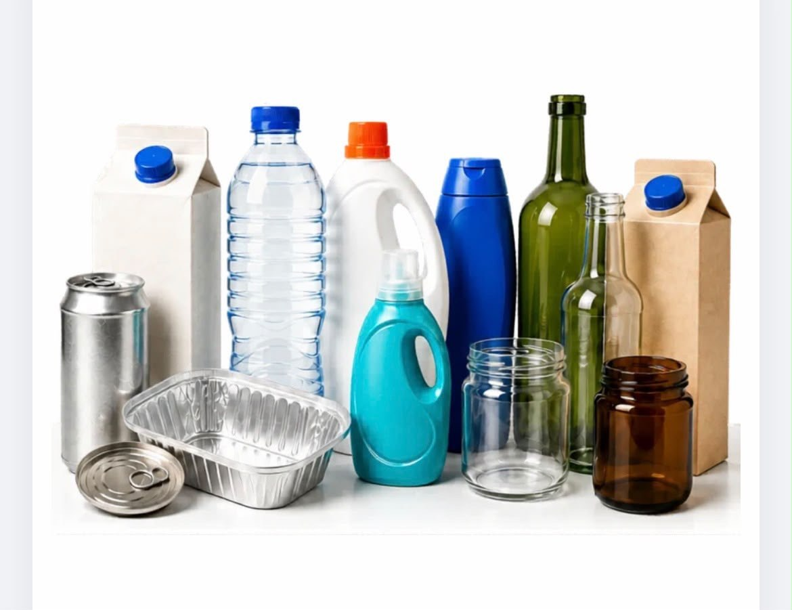

// 01.RECICLABLES
Gestión de residuos reciclables
Retiro, transporte, clasificación y preparación de materiales reciclables para su valorización.
- Recolección selectiva por tipo de material
- Transporte especializado y trazable
- Clasificación y preparación en planta
- Consolidación para valorización
- Capacitación para correcta segregación de residuos
Plásticos 1-7 Vidrio Cartón Papel Metales Tetra Pak